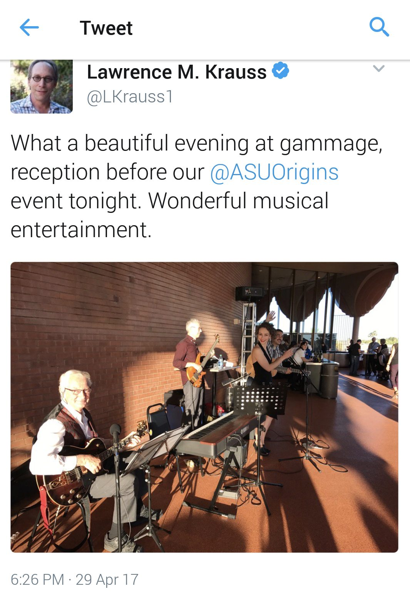

Who Knew
At ASU, I sang and played piano in Who Knew, a band with my colleagues and friends, ProfJohn CH Spence and Uwe Weierstall. We played at BioXFEL conferences, ASU events, and whatever other opportunities we have when we're all in one city (rarely!). These will remain some of my favourite memories of John.
Listen to Nobody knows that (written by Kat Edmonson, performed by Who Knew, featuring Derek Mendez on lead guitar)
